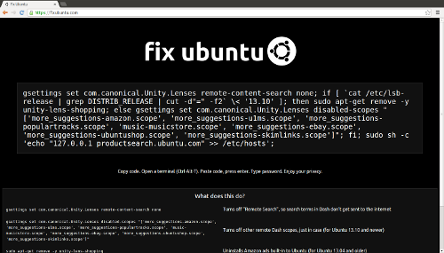
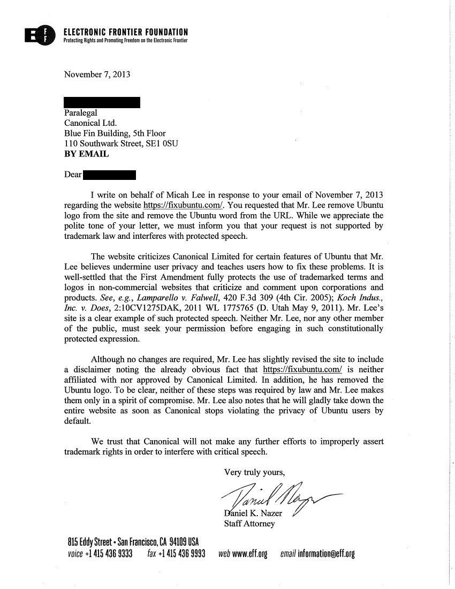

Canonical shouldn’t abuse trademark law to silence critics of its privacy decisions
I run the website fixubuntu.com, a place to quickly and easily learn how to disable the privacy-invasive features that are enabled by default in Ubuntu.
This morning I received this email from an employee of Canonical Limited, the company that owns and manages the Ubuntu project:
Subject: Your Use of Ubuntu
From: **@canonical.com
Dear Micah,
Canonical Limited (“Canonical”) owns and manages the intellectual property rights in Ubuntu and other associated intellectual property. In addition, Canonical is the owner of numerous trademarks and copyright throughout the world relating to Ubuntu, including Ubuntu logo and the word mark of Ubuntu.
It has been brought to our attention that your website: https://fixubuntu.com/ is using Canonical’s trademarks including Ubuntu logo on your website and Ubuntu word in your domain name. The Ubuntu logo [1] and a screenshot of your website [2] are set out below.
We are really pleased to know your interest in writing about Ubuntu. But whilst we can appreciate the passion Ubuntu inspires, we also have to be diligent to ensure that Ubuntu’s trademarks are used correctly.
To keep the balance between the integrity of our trademarks and the ability to to use and promote Ubuntu, we’ve tried to define a reasonable Intellectual Property Policy. You can read the full policy at http://www.canonical.com/intellectual-property-policy. As you can see from our policy, to use the Ubuntu trademarks and and Ubuntu word in a domain name would require approval from Canonical.
Unfortunately, in this instance we cannot give you permission to use Ubuntu trademarks on your website and in your domain name as they may lead to confusion or the misunderstanding that your website is associated with Canonical or Ubuntu.
So, whilst we are very happy for you to write about Ubuntu, we request you to remove Ubuntu word from you domain name and Ubuntu logo from your website. We would highly appreciate if you could confirm you have done so by replying this email to us.
Thank you for your cooperation and we look forward to hearing from you.
If you have any further questions, please feel free to contact us.
[1] Ubuntu Logo
[2] A screenshot of your website

Yours faithfully,
Paralegal
Canonical
Blue Fin Building, 5th Floor
110 Southwark Street, SE1 0SU
Direct Dial: +44 (0)20 7630 2417
Ubuntu – Linux for Human Beings
www.canonical.com | www.ubuntu.com
The first thing I would like to say is my use of the Ubuntu logo and the word “ubuntu” in my domain name falls under nominative use. Although I’m perfectly within my rights to continue using both, I’ve decided to remove the Ubuntu logo from the website, but add a disclaimer—because it seems like a nice thing to do.
Disclaimer: In case you are either 1) a complete idiot; or 2) a lawyer; or 3) both, please be aware that this site is not affiliated with or approved by Canonical Limited. This site criticizes Canonical for certain privacy-invading features of Ubuntu and teaches users how to fix them. So, obviously, the site is not approved by Canonical. And our use of the trademarked term Ubuntu is plainly descriptive—it helps the public find this site and understand its message.
Canonical employees: If this still bothers you, there’s a simple thing you can do to make me completely shut down the website. You can require users to opt-in to you collecting information about what they’re searching for on their own computers and then displaying ads to them about it, rather than violating their privacy by default. If people didn’t need to find websites that teach them how to opt out, there would be no reason for me to run fixubuntu.com. It’s as simple as:
gsettings set com.canonical.Unity.Lenses remote-content-search none
Sending a (very polite, which I appreciate) takedown request isn’t very much in the spirit of open source. If you’d like to improve fixubuntu.com in a more productive way, then I suggest you submit a patch. The code for fixubuntu.com is licensed under the GNU Affero General Public License, and the code is hosted on Github. Pull requests are welcome.
UPDATE: Here is the letter that EFF staff attorney Daniel Nazer wrote in response to the takedown notice.

UPDATE 2: Canonical responds.
UPDATE 3: “This was a bit silly on our part, sorry,” apologizes Mark Shuttleworth.